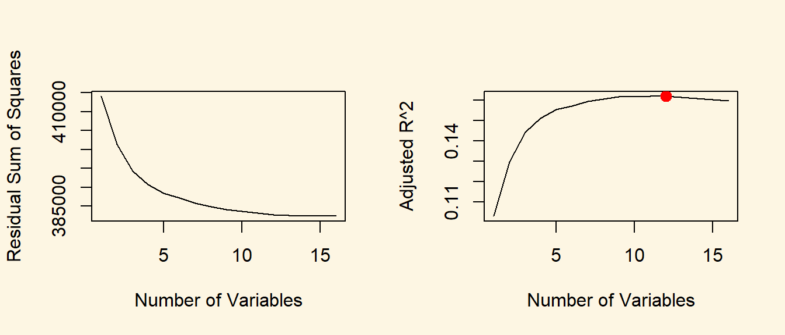
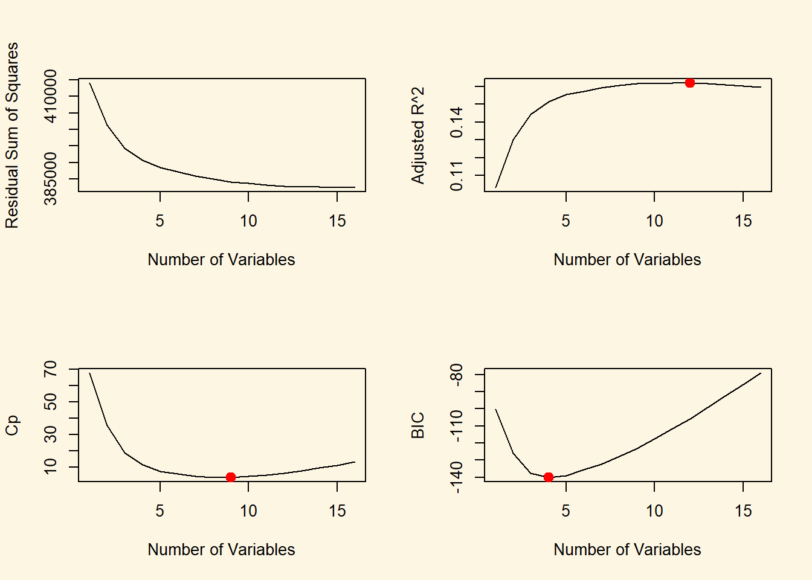
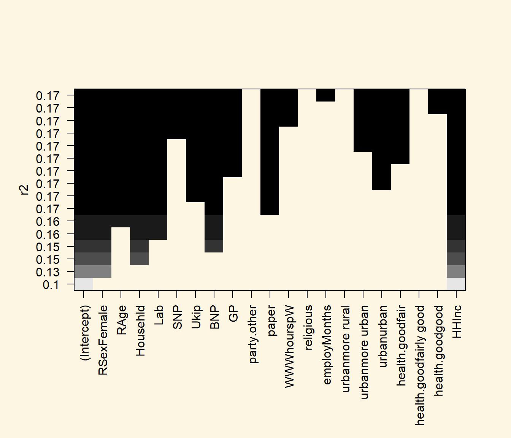
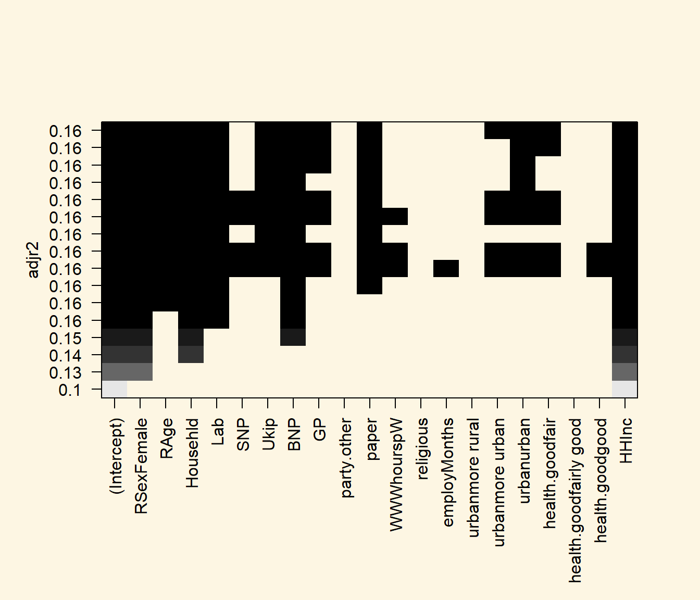
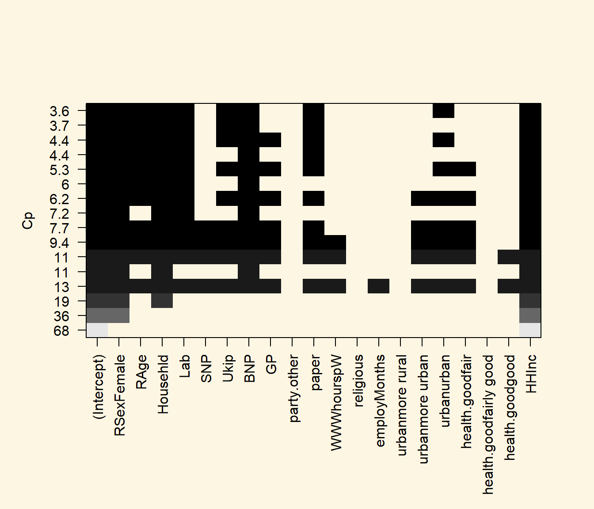
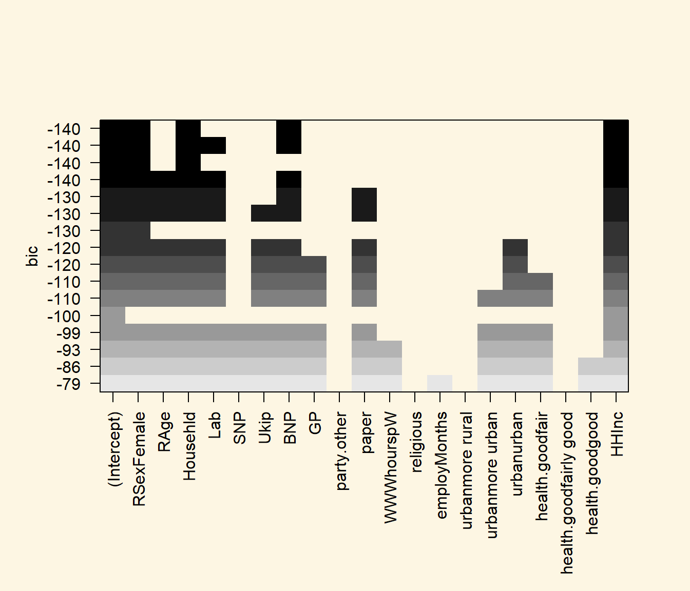
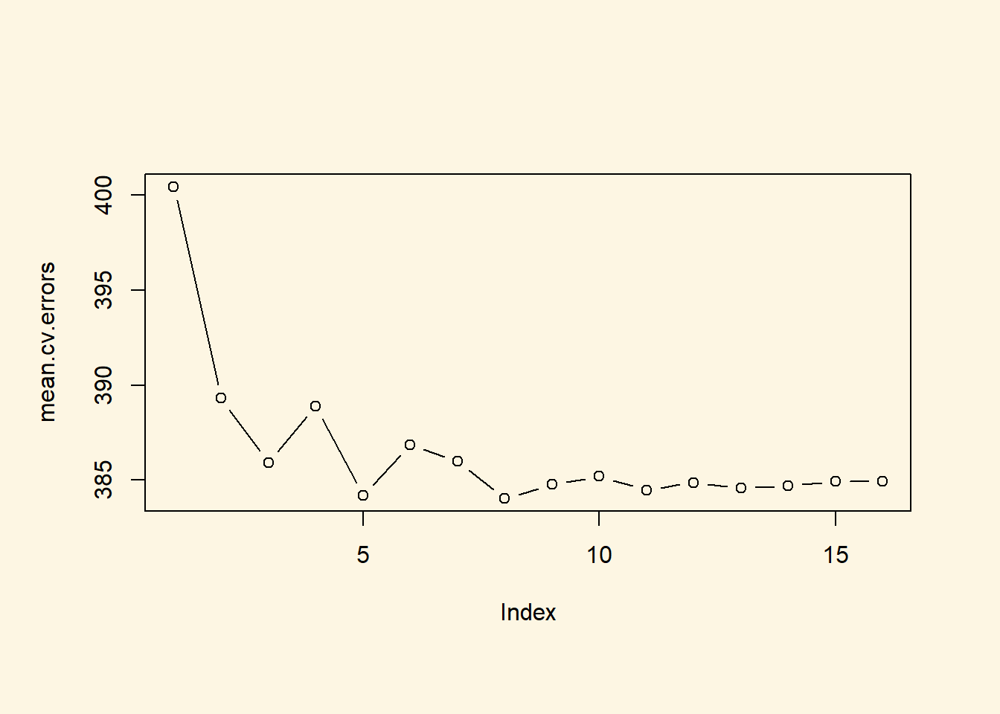

Chapter 4 Subset Selection
4.1 Seminar
In this exercise, we learn how to select the best predictors out of a set of variables. This is sometimes referred to as a variable selection model (the Lasso which we introduce later falls into the same category).
We start by clearing our workspace.
4.1.1 Subset Selection Methods
We use a modified data set on non-western immigrants (we inserted some missings). Download the data here.
The codebook is:
| Variable Name | Description |
|---|---|
| IMMBRIT | Out of every 100 people in Britain, how many do you think are immigrants from Non-western countries? |
| over.estimate | 1 if estimate is higher than 10.7%. |
| RSex | 1 = male, 2 = female |
| RAge | Age of respondent |
| Househld | Number of people living in respondent’s household |
| Cons, Lab, SNP, Ukip, BNP, GP, party.other | Party self-identification |
| paper | Do you normally read any daily morning newspaper 3+ times/week? |
| WWWhourspW | How many hours WWW per week? |
| religious | Do you regard yourself as belonging to any particular religion? |
| employMonths | How many mnths w. present employer? |
| urban | Population density, 4 categories (highest density is 4, lowest is 1) |
| health.good | How is your health in general for someone of your age? (0: bad, 1: fair, 2: fairly good, 3: good) |
| HHInc | Income bands for household, high number = high HH income |
We check our dataset for missing values variable by variable using apply(), is.na(), and table().
IMMBRIT over.estimate RSex RAge Househld
8 NA NA NA NA
Cons Lab SNP Ukip BNP
NA NA NA NA NA
GP party.other paper WWWhourspW religious
NA NA NA NA NA
employMonths urban health.good HHInc
NA NA NA NA We next drop variables from the dataset.
If you ever want to drop variables on an entire dataset you can run df <- na.omit(df). If you want to use the same method for dropping a few variables, you can run df[, c("some var", "some other var")] <- na.omit(df[, c("some var", "some other var")]).
We now declare the categorical variables to be factors and create a copy of the main data set that excludes over.estimate.
# declare factor variables
df$urban <- factor(df$urban, labels = c("rural", "more rural", "more urban", "urban"))
df$RSex <- factor(df$RSex, labels = c("Male", "Female"))
df$health.good <- factor(df$health.good, labels = c("bad", "fair", "fairly good", "good") )
# drop the binary response coded 1 if IMMBRIT > 10.7
df$over.estimate <- NULL
df$Cons <- NULL4.1.2 Best Subset Selection
We use the regsubsets() function to identify the best model based on subset selection quantified by the residual sum of squares (RSS) for each model. The function is included in the leaps package which we need to install if it is not already like so: install.packages("leaps").
library(leaps)
# run best subset selection
regfit.full <- regsubsets(IMMBRIT ~ ., data = df)
summary(regfit.full)Subset selection object
Call: regsubsets.formula(IMMBRIT ~ ., data = df)
20 Variables (and intercept)
Forced in Forced out
RSexFemale FALSE FALSE
RAge FALSE FALSE
Househld FALSE FALSE
Lab FALSE FALSE
SNP FALSE FALSE
Ukip FALSE FALSE
BNP FALSE FALSE
GP FALSE FALSE
party.other FALSE FALSE
paper FALSE FALSE
WWWhourspW FALSE FALSE
religious FALSE FALSE
employMonths FALSE FALSE
urbanmore rural FALSE FALSE
urbanmore urban FALSE FALSE
urbanurban FALSE FALSE
health.goodfair FALSE FALSE
health.goodfairly good FALSE FALSE
health.goodgood FALSE FALSE
HHInc FALSE FALSE
1 subsets of each size up to 8
Selection Algorithm: exhaustive
RSexFemale RAge Househld Lab SNP Ukip BNP GP party.other paper
1 ( 1 ) " " " " " " " " " " " " " " " " " " " "
2 ( 1 ) "*" " " " " " " " " " " " " " " " " " "
3 ( 1 ) "*" " " "*" " " " " " " " " " " " " " "
4 ( 1 ) "*" " " "*" " " " " " " "*" " " " " " "
5 ( 1 ) "*" " " "*" "*" " " " " "*" " " " " " "
6 ( 1 ) "*" "*" "*" "*" " " " " "*" " " " " " "
7 ( 1 ) "*" "*" "*" "*" " " " " "*" " " " " "*"
8 ( 1 ) "*" "*" "*" "*" " " "*" "*" " " " " "*"
WWWhourspW religious employMonths urbanmore rural urbanmore urban
1 ( 1 ) " " " " " " " " " "
2 ( 1 ) " " " " " " " " " "
3 ( 1 ) " " " " " " " " " "
4 ( 1 ) " " " " " " " " " "
5 ( 1 ) " " " " " " " " " "
6 ( 1 ) " " " " " " " " " "
7 ( 1 ) " " " " " " " " " "
8 ( 1 ) " " " " " " " " " "
urbanurban health.goodfair health.goodfairly good health.goodgood
1 ( 1 ) " " " " " " " "
2 ( 1 ) " " " " " " " "
3 ( 1 ) " " " " " " " "
4 ( 1 ) " " " " " " " "
5 ( 1 ) " " " " " " " "
6 ( 1 ) " " " " " " " "
7 ( 1 ) " " " " " " " "
8 ( 1 ) " " " " " " " "
HHInc
1 ( 1 ) "*"
2 ( 1 ) "*"
3 ( 1 ) "*"
4 ( 1 ) "*"
5 ( 1 ) "*"
6 ( 1 ) "*"
7 ( 1 ) "*"
8 ( 1 ) "*" In the regression output, variables with a star were selected for the model. Here, we see 8 different models from 1 to 8 variables. With the nvmax parameter we control the number of variables in the model. The default used by regsubsets() is 8.
# increase the max number of variables
regfit.full <- regsubsets(IMMBRIT ~ ., data = df, nvmax = 16)
reg.summary <- summary(regfit.full)We can look at the components of the reg.summary object using the names() function and examine the \(R^2\) statistic stored in rsq.
[1] "which" "rsq" "rss" "adjr2" "cp" "bic" "outmat" "obj" [1] 0.1040145 0.1316228 0.1469748 0.1546376 0.1595363 0.1621379 0.1650727
[8] 0.1672137 0.1689371 0.1699393 0.1708328 0.1717100 0.1721041 0.1723151
[15] 0.1725153 0.1726176Next, we plot the \(RSS\) and adjusted \(R^2\) and add a point where \(R^2\) is at its maximum using the which.max() function.
par( mfrow = c(2,2) ) # 2 row, 2 columns in plot window
plot(reg.summary$rss, xlab = "Number of Variables", ylab = "Residual Sum of Squares", type = "l")
plot(reg.summary$adjr2, xlab = "Number of Variables", ylab = "Adjusted R^2", type = "l")
# find the peak of adj. R^2
adjr2.max <- which.max( reg.summary$adjr2 )
points(adjr2.max, reg.summary$adjr2[adjr2.max], col = "red", pch = 20, cex = 2)
We can also plot the \(C_{p}\) statistic and \(BIC\) and identify the minimum points for each statistic using the \(which.min()\) function.
# cp
plot(reg.summary$cp, xlab = "Number of Variables", ylab = "Cp", type = "l")
cp.min <- which.min(reg.summary$cp)
points(cp.min, reg.summary$cp[cp.min], col = "red", cex = 2, pch = 20)
# bic
bic.min <- which.min(reg.summary$bic)
plot(reg.summary$bic, xlab = "Number of Variables", ylab = "BIC", type = "l")
points(bic.min, reg.summary$bic[bic.min], col = "red", cex = 2, pch = 20)
The estimated models from regsubsets() can be directly plotted to compare the differences based on the values of \(R^2\), adjusted \(R^2\), \(C_{p}\) and \(BIC\) statistics.
par( mfrow = c(1,1), oma = c(3,0,0,0))
# plot model comparison based on R^2
plot(regfit.full, scale = "r2")



To show the coefficients associated with the model with the lowest \(BIC\), we use the coef() function.
(Intercept) RSexFemale Househld BNP HHInc
34.576036 6.970692 2.000771 10.830195 -1.511176 4.1.3 Forward and Backward Stepwise Selection
The default method used by regsubsets() is exhaustive but we can change it to forward or backward and compare the results. Best subset selection will take very long with many variables because the number of models to estimate grows exponentially. In thse cases, we will want to use forward and backward selection instead.
Let’s carry out forward selection.
# run forward selection
regfit.fwd <- regsubsets(IMMBRIT ~ ., data = df, nvmax = 16, method = "forward")
summary(regfit.fwd)Subset selection object
Call: regsubsets.formula(IMMBRIT ~ ., data = df, nvmax = 16, method = "forward")
20 Variables (and intercept)
Forced in Forced out
RSexFemale FALSE FALSE
RAge FALSE FALSE
Househld FALSE FALSE
Lab FALSE FALSE
SNP FALSE FALSE
Ukip FALSE FALSE
BNP FALSE FALSE
GP FALSE FALSE
party.other FALSE FALSE
paper FALSE FALSE
WWWhourspW FALSE FALSE
religious FALSE FALSE
employMonths FALSE FALSE
urbanmore rural FALSE FALSE
urbanmore urban FALSE FALSE
urbanurban FALSE FALSE
health.goodfair FALSE FALSE
health.goodfairly good FALSE FALSE
health.goodgood FALSE FALSE
HHInc FALSE FALSE
1 subsets of each size up to 16
Selection Algorithm: forward
RSexFemale RAge Househld Lab SNP Ukip BNP GP party.other paper
1 ( 1 ) " " " " " " " " " " " " " " " " " " " "
2 ( 1 ) "*" " " " " " " " " " " " " " " " " " "
3 ( 1 ) "*" " " "*" " " " " " " " " " " " " " "
4 ( 1 ) "*" " " "*" " " " " " " "*" " " " " " "
5 ( 1 ) "*" " " "*" "*" " " " " "*" " " " " " "
6 ( 1 ) "*" "*" "*" "*" " " " " "*" " " " " " "
7 ( 1 ) "*" "*" "*" "*" " " " " "*" " " " " "*"
8 ( 1 ) "*" "*" "*" "*" " " "*" "*" " " " " "*"
9 ( 1 ) "*" "*" "*" "*" " " "*" "*" " " " " "*"
10 ( 1 ) "*" "*" "*" "*" " " "*" "*" "*" " " "*"
11 ( 1 ) "*" "*" "*" "*" " " "*" "*" "*" " " "*"
12 ( 1 ) "*" "*" "*" "*" " " "*" "*" "*" " " "*"
13 ( 1 ) "*" "*" "*" "*" "*" "*" "*" "*" " " "*"
14 ( 1 ) "*" "*" "*" "*" "*" "*" "*" "*" " " "*"
15 ( 1 ) "*" "*" "*" "*" "*" "*" "*" "*" " " "*"
16 ( 1 ) "*" "*" "*" "*" "*" "*" "*" "*" " " "*"
WWWhourspW religious employMonths urbanmore rural
1 ( 1 ) " " " " " " " "
2 ( 1 ) " " " " " " " "
3 ( 1 ) " " " " " " " "
4 ( 1 ) " " " " " " " "
5 ( 1 ) " " " " " " " "
6 ( 1 ) " " " " " " " "
7 ( 1 ) " " " " " " " "
8 ( 1 ) " " " " " " " "
9 ( 1 ) " " " " " " " "
10 ( 1 ) " " " " " " " "
11 ( 1 ) " " " " " " " "
12 ( 1 ) " " " " " " " "
13 ( 1 ) " " " " " " " "
14 ( 1 ) "*" " " " " " "
15 ( 1 ) "*" " " " " " "
16 ( 1 ) "*" " " "*" " "
urbanmore urban urbanurban health.goodfair
1 ( 1 ) " " " " " "
2 ( 1 ) " " " " " "
3 ( 1 ) " " " " " "
4 ( 1 ) " " " " " "
5 ( 1 ) " " " " " "
6 ( 1 ) " " " " " "
7 ( 1 ) " " " " " "
8 ( 1 ) " " " " " "
9 ( 1 ) " " "*" " "
10 ( 1 ) " " "*" " "
11 ( 1 ) " " "*" "*"
12 ( 1 ) "*" "*" "*"
13 ( 1 ) "*" "*" "*"
14 ( 1 ) "*" "*" "*"
15 ( 1 ) "*" "*" "*"
16 ( 1 ) "*" "*" "*"
health.goodfairly good health.goodgood HHInc
1 ( 1 ) " " " " "*"
2 ( 1 ) " " " " "*"
3 ( 1 ) " " " " "*"
4 ( 1 ) " " " " "*"
5 ( 1 ) " " " " "*"
6 ( 1 ) " " " " "*"
7 ( 1 ) " " " " "*"
8 ( 1 ) " " " " "*"
9 ( 1 ) " " " " "*"
10 ( 1 ) " " " " "*"
11 ( 1 ) " " " " "*"
12 ( 1 ) " " " " "*"
13 ( 1 ) " " " " "*"
14 ( 1 ) " " " " "*"
15 ( 1 ) " " "*" "*"
16 ( 1 ) " " "*" "*" Let’s carry out backwards selection next.
# run backward selection
regfit.bwd <- regsubsets(IMMBRIT ~ ., data = df, nvmax = 16, method = "backward")
summary(regfit.bwd)Subset selection object
Call: regsubsets.formula(IMMBRIT ~ ., data = df, nvmax = 16, method = "backward")
20 Variables (and intercept)
Forced in Forced out
RSexFemale FALSE FALSE
RAge FALSE FALSE
Househld FALSE FALSE
Lab FALSE FALSE
SNP FALSE FALSE
Ukip FALSE FALSE
BNP FALSE FALSE
GP FALSE FALSE
party.other FALSE FALSE
paper FALSE FALSE
WWWhourspW FALSE FALSE
religious FALSE FALSE
employMonths FALSE FALSE
urbanmore rural FALSE FALSE
urbanmore urban FALSE FALSE
urbanurban FALSE FALSE
health.goodfair FALSE FALSE
health.goodfairly good FALSE FALSE
health.goodgood FALSE FALSE
HHInc FALSE FALSE
1 subsets of each size up to 16
Selection Algorithm: backward
RSexFemale RAge Househld Lab SNP Ukip BNP GP party.other paper
1 ( 1 ) " " " " " " " " " " " " " " " " " " " "
2 ( 1 ) "*" " " " " " " " " " " " " " " " " " "
3 ( 1 ) "*" " " "*" " " " " " " " " " " " " " "
4 ( 1 ) "*" " " "*" " " " " " " "*" " " " " " "
5 ( 1 ) "*" " " "*" "*" " " " " "*" " " " " " "
6 ( 1 ) "*" "*" "*" "*" " " " " "*" " " " " " "
7 ( 1 ) "*" "*" "*" "*" " " " " "*" " " " " "*"
8 ( 1 ) "*" "*" "*" "*" " " "*" "*" " " " " "*"
9 ( 1 ) "*" "*" "*" "*" " " "*" "*" " " " " "*"
10 ( 1 ) "*" "*" "*" "*" " " "*" "*" "*" " " "*"
11 ( 1 ) "*" "*" "*" "*" " " "*" "*" "*" " " "*"
12 ( 1 ) "*" "*" "*" "*" " " "*" "*" "*" " " "*"
13 ( 1 ) "*" "*" "*" "*" "*" "*" "*" "*" " " "*"
14 ( 1 ) "*" "*" "*" "*" "*" "*" "*" "*" " " "*"
15 ( 1 ) "*" "*" "*" "*" "*" "*" "*" "*" " " "*"
16 ( 1 ) "*" "*" "*" "*" "*" "*" "*" "*" " " "*"
WWWhourspW religious employMonths urbanmore rural
1 ( 1 ) " " " " " " " "
2 ( 1 ) " " " " " " " "
3 ( 1 ) " " " " " " " "
4 ( 1 ) " " " " " " " "
5 ( 1 ) " " " " " " " "
6 ( 1 ) " " " " " " " "
7 ( 1 ) " " " " " " " "
8 ( 1 ) " " " " " " " "
9 ( 1 ) " " " " " " " "
10 ( 1 ) " " " " " " " "
11 ( 1 ) " " " " " " " "
12 ( 1 ) " " " " " " " "
13 ( 1 ) " " " " " " " "
14 ( 1 ) "*" " " " " " "
15 ( 1 ) "*" " " " " " "
16 ( 1 ) "*" " " "*" " "
urbanmore urban urbanurban health.goodfair
1 ( 1 ) " " " " " "
2 ( 1 ) " " " " " "
3 ( 1 ) " " " " " "
4 ( 1 ) " " " " " "
5 ( 1 ) " " " " " "
6 ( 1 ) " " " " " "
7 ( 1 ) " " " " " "
8 ( 1 ) " " " " " "
9 ( 1 ) " " "*" " "
10 ( 1 ) " " "*" " "
11 ( 1 ) " " "*" "*"
12 ( 1 ) "*" "*" "*"
13 ( 1 ) "*" "*" "*"
14 ( 1 ) "*" "*" "*"
15 ( 1 ) "*" "*" "*"
16 ( 1 ) "*" "*" "*"
health.goodfairly good health.goodgood HHInc
1 ( 1 ) " " " " "*"
2 ( 1 ) " " " " "*"
3 ( 1 ) " " " " "*"
4 ( 1 ) " " " " "*"
5 ( 1 ) " " " " "*"
6 ( 1 ) " " " " "*"
7 ( 1 ) " " " " "*"
8 ( 1 ) " " " " "*"
9 ( 1 ) " " " " "*"
10 ( 1 ) " " " " "*"
11 ( 1 ) " " " " "*"
12 ( 1 ) " " " " "*"
13 ( 1 ) " " " " "*"
14 ( 1 ) " " " " "*"
15 ( 1 ) " " "*" "*"
16 ( 1 ) " " "*" "*" Then we compare the models.
(Intercept) RSexFemale RAge Househld Lab BNP
40.02553709 7.14423868 -0.08205116 1.70838328 -3.34664442 9.11326764
paper HHInc
2.37633989 -1.60436490 (Intercept) RSexFemale RAge Househld Lab BNP
40.02553709 7.14423868 -0.08205116 1.70838328 -3.34664442 9.11326764
paper HHInc
2.37633989 -1.60436490 (Intercept) RSexFemale RAge Househld Lab BNP
40.02553709 7.14423868 -0.08205116 1.70838328 -3.34664442 9.11326764
paper HHInc
2.37633989 -1.60436490 In this case, all methods arrived at the same conclusion. This will not always be the case. We can arrive at very different conclusions.
4.1.3.1 Choosing Among Models Using the Validation Set Approach and Cross-Validation
For validation set approach, we split the dataset into a training subset and a test subset. In order to ensure that the results are consistent over multiple iterations, we set the random seed with set.seed() before calling sample().
set.seed(1)
# sample true or false for each observation
train <- sample( c(TRUE, FALSE), size = nrow(df), replace = TRUE )
# the complement
test <- (!train)We use regsubsets() as we did in the last section, but limit the estimation to the training subset.
We create a matrix from the test subset using model.matrix(). Model matrix takes the dependent variable out of the data and adds an intercept to it.
Next, we compute the validation error for each model.
# validation error for each model
val.errors <- NA
for (i in 1:16 ){
coefi <- coef(regfit.best, id = i)
# this prediction without the predict function for a linear model
# here we use linear algebra operations were we multiply the data matrix
# with the coefficient vector
y_hat <- test.mat[, names(coefi)] %*% coefi
# we compute the test set MSE for each model
val.errors[i] <- mean( (df$IMMBRIT[test] - y_hat)^2 )
}We examine the validation error for each model and identify the best model with the lowest error.
[1] 422.6788 433.3656 422.1876 423.2052 419.1279 428.0234 425.6056
[8] 424.7795 425.5773 427.3771 428.2082 427.7471 426.4746 427.7618
[15] 426.7668 426.3854# which model has smallest error
min.val.errors <- which.min(val.errors)
# coefficients of that model
coef( regfit.best, min.val.errors )(Intercept) RSexFemale RAge Househld Lab HHInc
47.9382527 6.2858758 -0.1880005 1.5486251 -5.1619813 -1.7403107 We can combine these steps into a function that can be called repeatedly when running k-fold cross-validation.
# predict function for repeatedly choosing model with lowest test error
predict.regsubsets <- function( object, newdata, id, ... ){
# get the formula from the model
m.formula <- as.formula( object$call[[2]] )
# use that formula to create the model matrix for some new data
mat <- model.matrix( m.formula, newdata )
# get coeffiecients where id is the number of variables
coefi <- coef( object, id = id )
# get the variable names of current model
xvars <- names( coefi )
# multiply data with coefficients
mat[ , xvars ] %*% coefi
}We run regsubsets() on the full dataset and examine the coefficients associated with the model that has the lower validation error.
# best subset on full data set
regfit.best <- regsubsets( IMMBRIT ~ ., data = df, nvmax = 16 )
# examine coefficients of the model that had the lowest validation error
coef( regfit.best, min.val.errors )(Intercept) RSexFemale Househld Lab BNP HHInc
35.920518 6.886259 2.062351 -3.394188 9.708402 -1.563859 4.1.3.2 k-fold cross-validation
For cross-validation, we create the number of folds needed (10, in this case) and allocate a matrix for storing the results.
# number of folds
k <- 10
set.seed(1)
# fold assignment for each observation
folds <- sample(1:k, nrow(df), replace = TRUE)
# frequency table of fold assignment (should be relatively balanced)
table(folds)folds
1 2 3 4 5 6 7 8 9 10
99 83 104 106 110 101 112 100 114 112 Let’s create an object that will store errors for cross-validation and we then look at that.
# container for cross-validation errors
cv.errors <- matrix(NA, nrow = k, ncol = 16, dimnames = list(NULL, paste(1:16)))
# have a look at the matrix
cv.errors 1 2 3 4 5 6 7 8 9 10 11 12 13 14 15 16
[1,] NA NA NA NA NA NA NA NA NA NA NA NA NA NA NA NA
[2,] NA NA NA NA NA NA NA NA NA NA NA NA NA NA NA NA
[3,] NA NA NA NA NA NA NA NA NA NA NA NA NA NA NA NA
[4,] NA NA NA NA NA NA NA NA NA NA NA NA NA NA NA NA
[5,] NA NA NA NA NA NA NA NA NA NA NA NA NA NA NA NA
[6,] NA NA NA NA NA NA NA NA NA NA NA NA NA NA NA NA
[7,] NA NA NA NA NA NA NA NA NA NA NA NA NA NA NA NA
[8,] NA NA NA NA NA NA NA NA NA NA NA NA NA NA NA NA
[9,] NA NA NA NA NA NA NA NA NA NA NA NA NA NA NA NA
[10,] NA NA NA NA NA NA NA NA NA NA NA NA NA NA NA NAWe then run through each fold in a for() loop and predict the salary using our predict function. We then calculate the validation error for each fold and save them in the matrix created above.
# loop over folds
for (a in 1:k){
# best subset selection on training data
best.fit <- regsubsets(IMMBRIT ~ ., data = df[ folds != a, ], nvmax = 16)
# loop over the 16 subsets
for (b in 1:16){
# predict response for test set for current subset
pred <- predict(best.fit, df[ folds == a ,], id = b )
# MSE into container; rows are folds; columns are subsets
cv.errors[a, b] <- mean( (df$IMMBRIT[folds==a] - pred)^2 )
} # end of loop over the 16 subsets
} # end of loop over folds
# the cross-validation error matrix
cv.errors 1 2 3 4 5 6 7
[1,] 340.6348 360.4143 354.1625 361.5282 354.2123 357.4392 352.4973
[2,] 452.1263 416.6181 421.1696 423.3392 412.5419 416.3733 415.5115
[3,] 347.7890 332.3682 325.9761 326.3122 306.9565 310.4999 303.0287
[4,] 313.2735 337.9460 334.7280 333.0075 325.7449 329.7096 326.7136
[5,] 386.3464 367.9026 375.7936 384.1864 380.3926 384.2020 380.7137
[6,] 491.0775 484.0378 480.4096 487.4987 480.6689 478.1541 474.7581
[7,] 490.9417 479.0285 475.3201 473.5372 481.2985 473.6737 482.0662
[8,] 457.2409 426.8484 407.9413 407.6739 404.1949 412.6668 415.4127
[9,] 381.4168 370.7018 358.7797 366.7294 362.5290 363.9266 361.1322
[10,] 343.8041 317.2183 324.9596 325.2615 333.3371 342.0212 347.9536
8 9 10 11 12 13 14
[1,] 351.4881 349.5941 350.7354 350.9006 349.8262 348.9046 348.9941
[2,] 420.6110 427.7911 431.2058 426.3387 419.2075 419.2498 420.0484
[3,] 305.4976 306.6941 309.1712 310.9844 311.0525 313.8237 314.9565
[4,] 325.9687 326.9600 328.4326 327.0528 325.3324 326.4723 325.8034
[5,] 382.5723 388.3581 388.0053 387.1782 388.6989 383.5634 383.1115
[6,] 474.7654 474.0053 475.5215 471.2198 473.1165 473.3898 472.3392
[7,] 473.5635 470.9286 466.7013 465.5243 469.4845 467.6969 469.9937
[8,] 414.4015 407.5812 408.8584 409.2999 410.0517 407.8849 410.3678
[9,] 353.5598 357.7010 351.5392 352.7202 353.8711 354.3456 352.3022
[10,] 337.8455 337.9669 341.7642 343.5873 348.0795 350.2935 348.9332
15 16
[1,] 348.8001 348.3123
[2,] 421.0930 419.7895
[3,] 314.5607 314.9318
[4,] 325.5250 325.1381
[5,] 381.1764 381.5495
[6,] 473.5295 473.1426
[7,] 469.6818 469.2276
[8,] 410.8454 410.9011
[9,] 352.7259 354.9532
[10,] 351.3258 351.4992We calculate the mean error for all subsets by applying mean to each column using the apply() function.
# average cross-validation errors over the folds
mean.cv.errors <- apply(cv.errors, 2, mean)
mean.cv.errors 1 2 3 4 5 6 7 8
400.4651 389.3084 385.9240 388.9074 384.1876 386.8666 385.9788 384.0273
9 10 11 12 13 14 15 16
384.7580 385.1935 384.4806 384.8721 384.5624 384.6850 384.9264 384.9445 
Finally, we run regsubsets() on the full dataset and show the coefficients for the best performing model which we picked using 10-fold cross-validation.
# run regsubsets on full data set
reg.best <- regsubsets(IMMBRIT ~ ., data = df, nvmax = 16)
# coefficients of subset which minimized test error
coef(reg.best, which.min(mean.cv.errors))(Intercept) RSexFemale RAge Househld Lab Ukip
40.45488881 7.04808104 -0.08129894 1.67265081 -3.60995595 -5.90702725
BNP paper HHInc
8.81702077 2.46964179 -1.61703898